5人に1人以上
65歳以上の単独世帯率
（令和2年度）
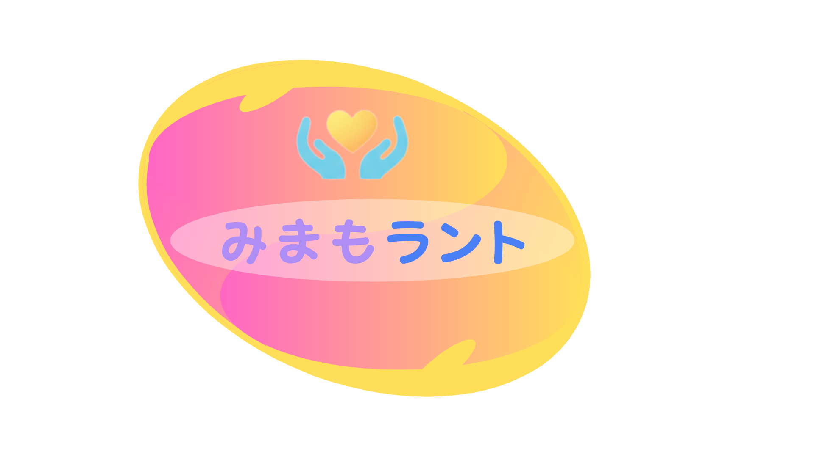
みまもラント高齢者見守りの新しい選択肢
みまもラントは、既存のIoT機器とAIを活用して、離れて暮らす家族の様子をやさしく見守る仕組みです。 初期費用を抑え、単純明快なUIで、毎日使える見守り体験を目指しています。
見守られる側 UI
1日1回の「元気です」通知
複雑な操作を省き、続けやすさを重視
5人に1人以上
65歳以上の単独世帯率
（令和2年度）
13万円〜22万円
介護施設の月額費用帯
（資料比較より）
増加傾向
高齢者割合・単独世帯ともに上昇
見守り需要は今後さらに拡大
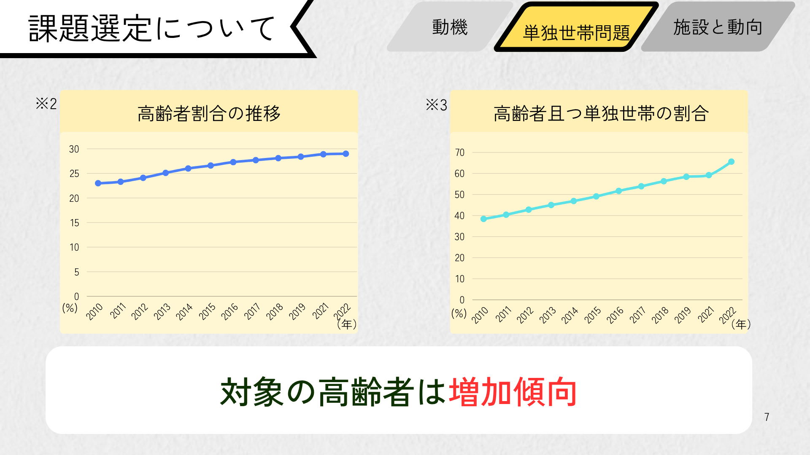
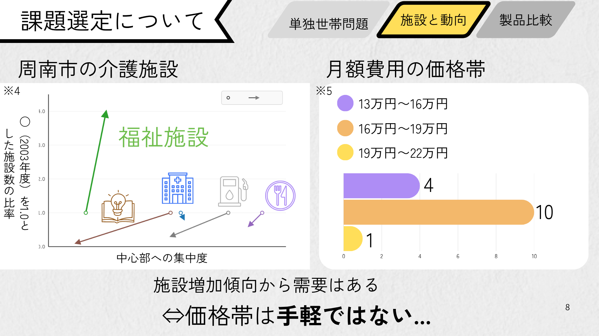
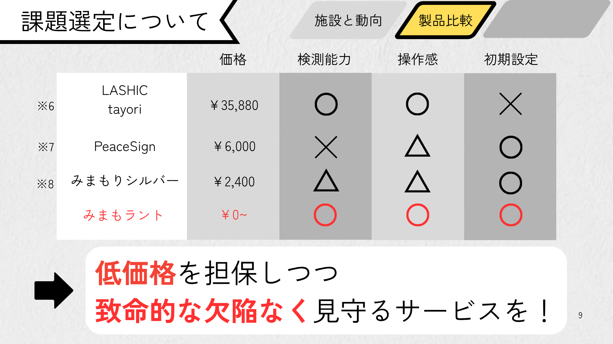
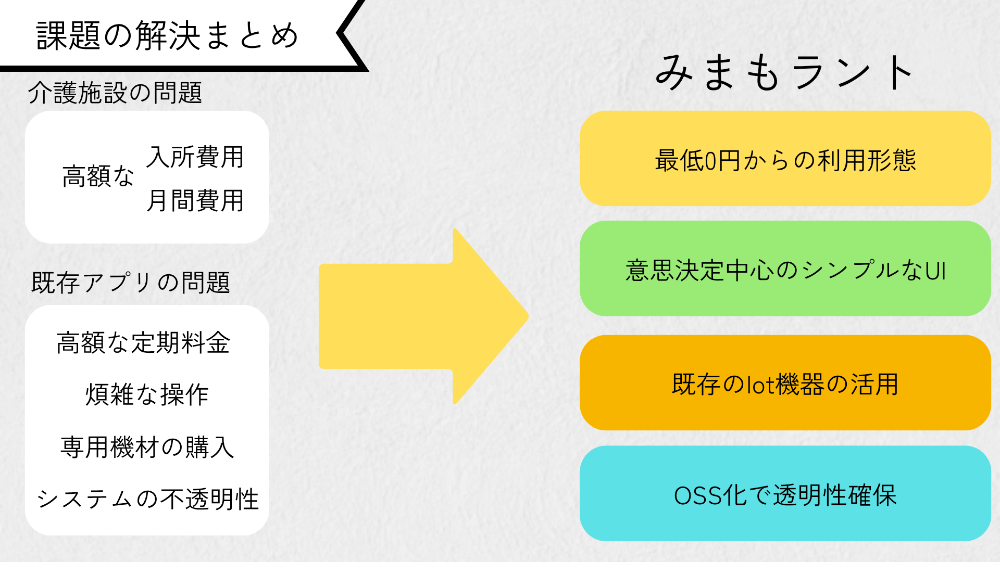
見守られる側は日々の確認を押すだけ。見守る側は概要・活動履歴・各デバイス状態を一目で把握できます。
IoT使用履歴を蓄積し、AIが変化を学習。普段と違う兆候を検知し、見守り基準の変更提案も可能です。
既存機器を活かした構成で初期費用を抑制。自前運用なら月額0円からの運用にも対応します。
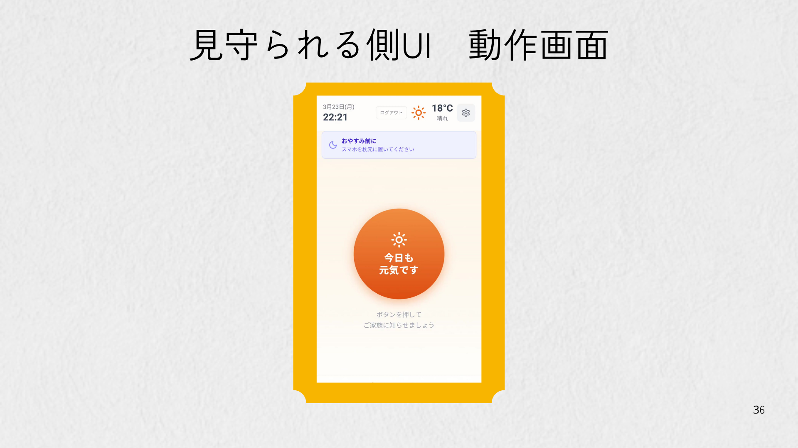
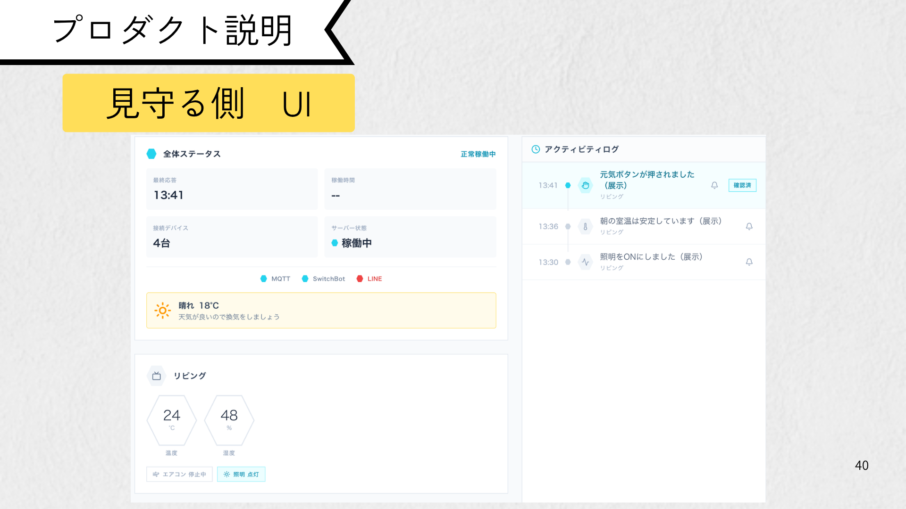
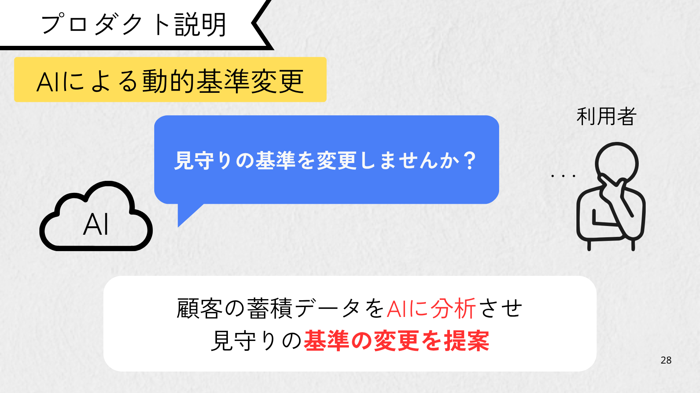
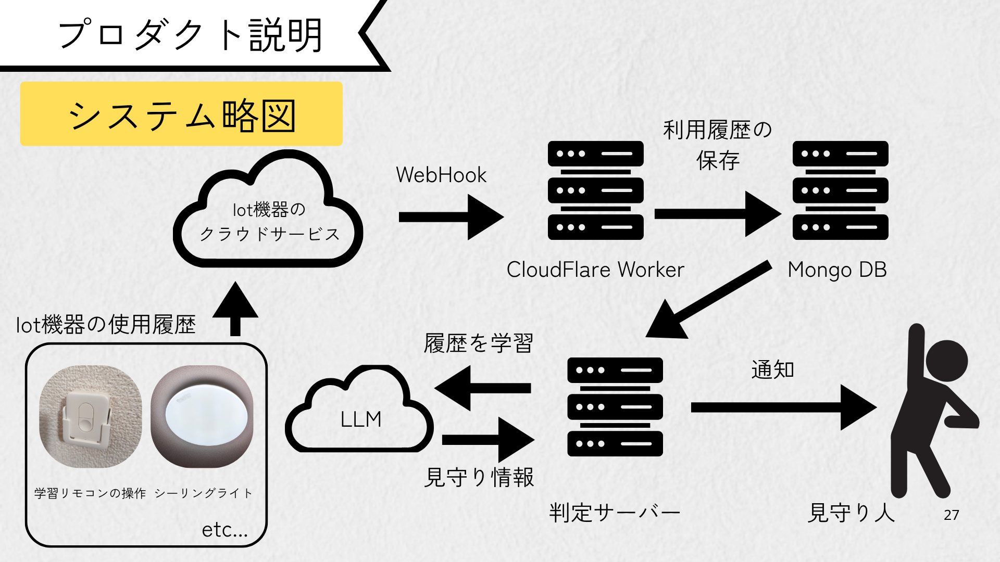
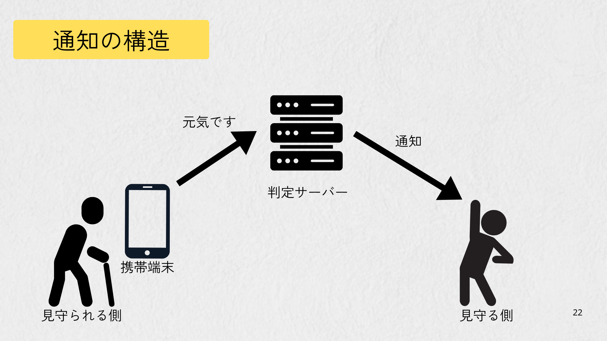
初期 4,960円 / 月額 500円
開閉センサー + 温湿度計 + レンタルサーバー
初期 4,960円 / 月額 0円
人感センサー + 電力センサー + 自前サーバー
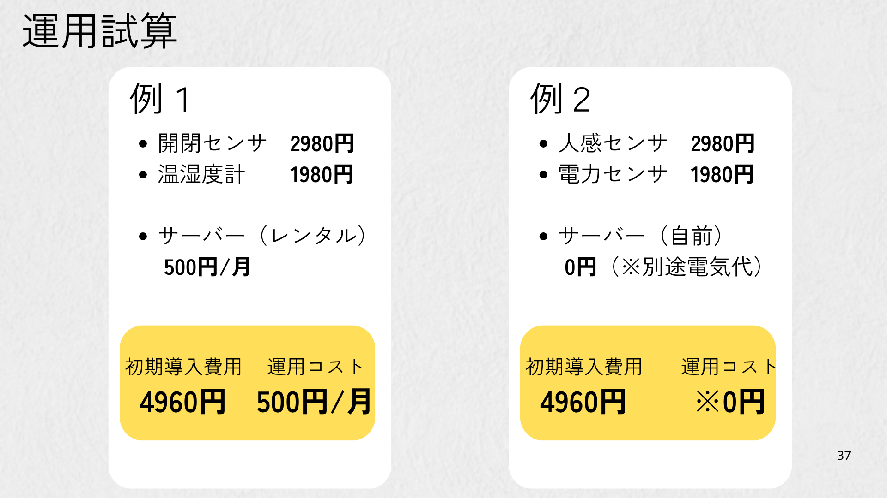
高齢者だけでなく、子ども・ペットの見守りにも対応し、家庭全体を支える基盤へ。
「見守る家族がいない」ケースにも対応できるよう、管理者・自治体連携の仕組みを検討。
多様な通信方式・IoT家電・ペットカメラなどへの対応を広げ、導入自由度を高めます。
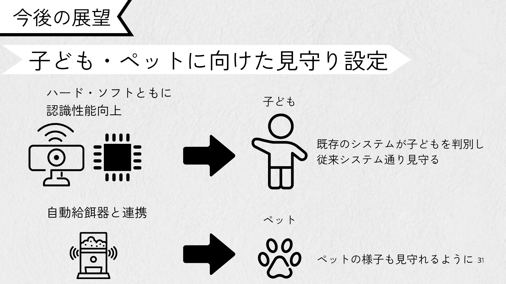
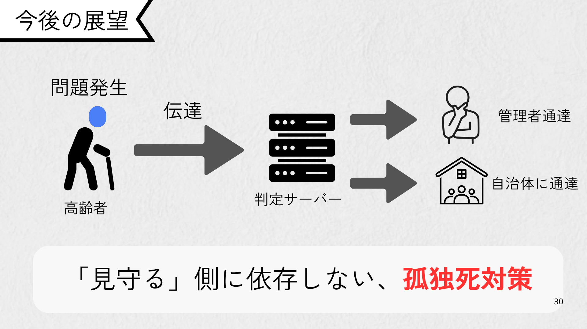
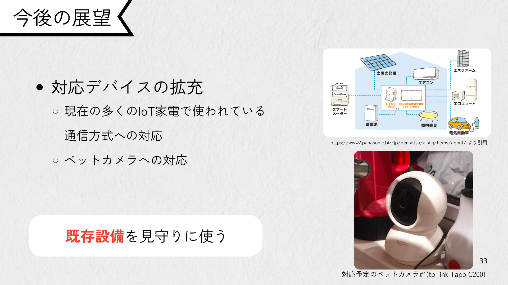